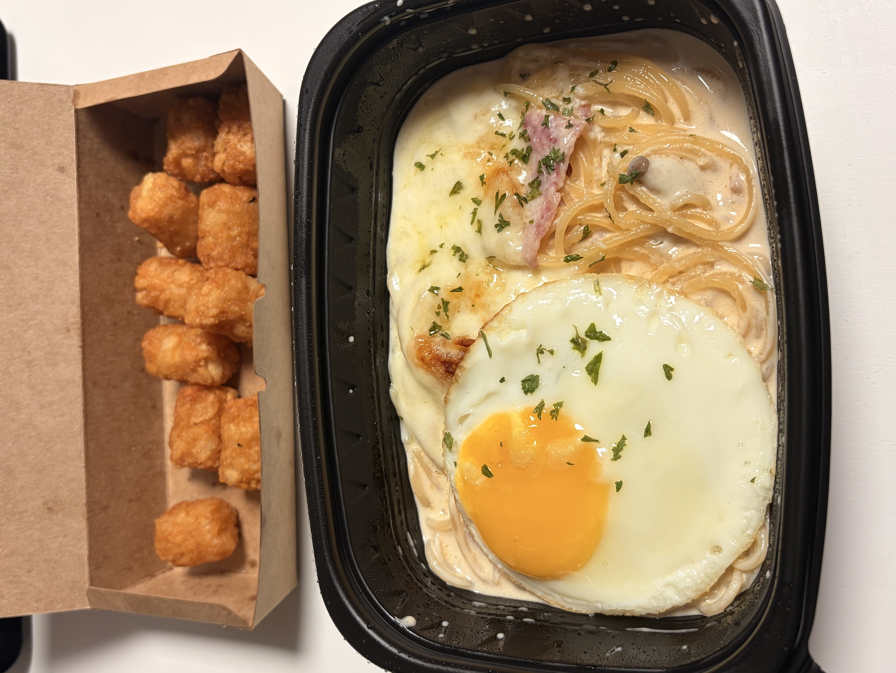
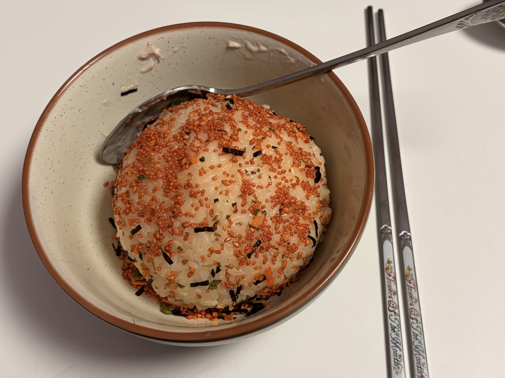
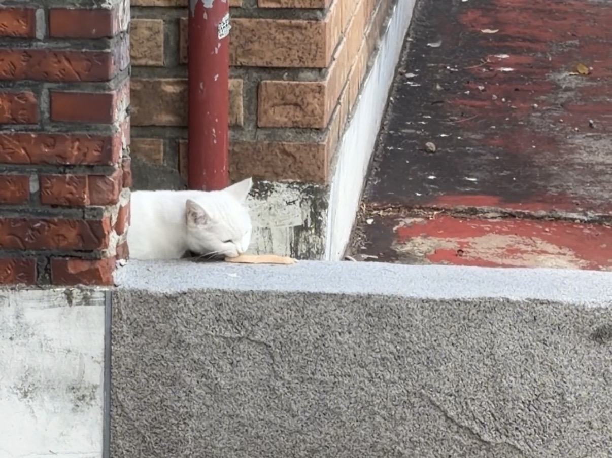
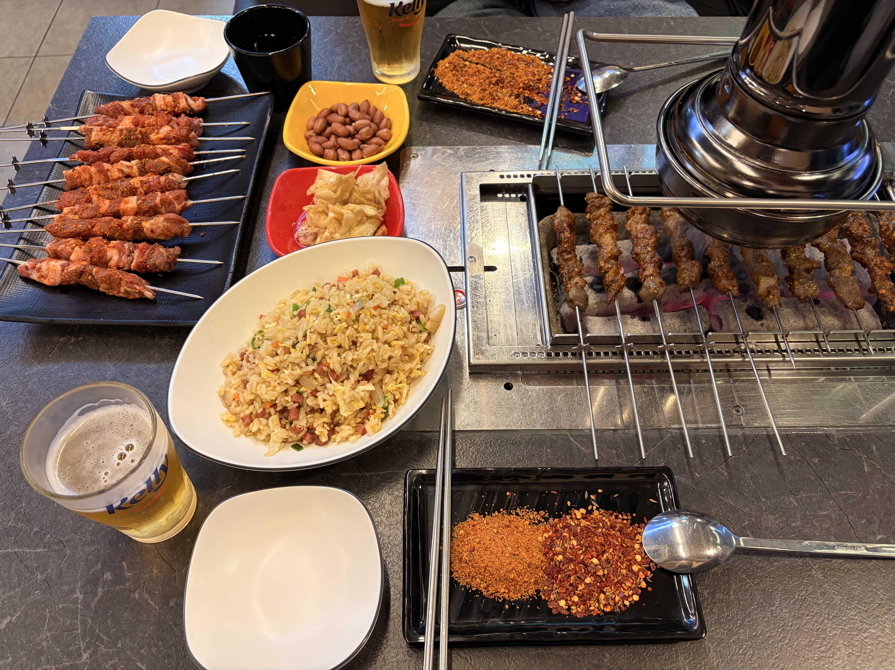

오늘따라 유독 가을 날씨길래 따뜻한 라테를 시켰는데요
라테아트가 있는 줄 모르고 호롭 마셔버렸답니다
수업 듣는데 갑자기 동기가 내 마우스 치이카와 닮았다고 했어요
(진심 치이카와 뭉쳐서 만든 줄)

요즘 배달을 너무 많이 먹는 것 같아서
오늘은 기필코 요리해 먹기로 다짐했는데요
배달하시는 분들도 먹고 살아야죠.
10월 2일 금요일 | 날씨 덥다가 춥네요...

초딩때 미술학원에서 매일 토마토 김밥을 시켜주셨는데요
저는 참치마요 주먹밥을 가장 좋아했답니다
오랜만에 먹으니까 추억들이 록새록새하네요 선생님이 너무 무서워서 질문하지 못하고 30분간 서 있었던 추억... 스케치를 너무 진하게 해서 도화지에 유령 만든다며 맨날 혼났던 추억...

저는 고양이털 알레르기가 있답니다
하지만 고양이를 위한 츄르가 항상 주머니에 준비되어 있는 여성이죠
오늘도 츄르를 짜주고 멀찍이서 지켜만 봅니다
10월 3일 토요일 | 날씨가 쌀쌀합니다

여기는 제 또간집인데요
수원역 '천지양꼬치' 추천합니다.
무조건 양념 양꼬치 + 꿔바로우 + 계란볶음밥으로 시키세요!